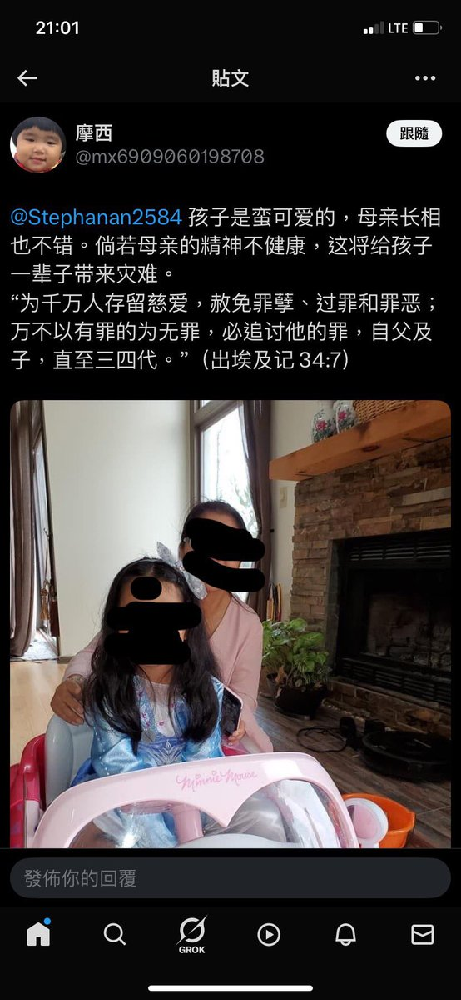
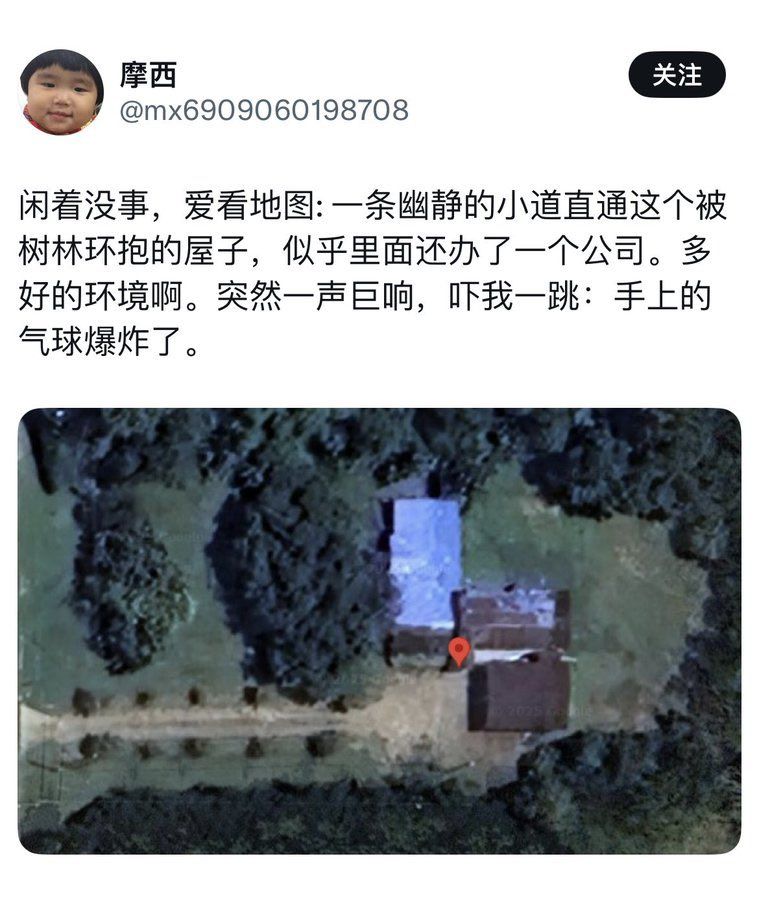

432InfantryRegiment
@432Ifantrygroup
@wswm7212151 就这样的还民运？配代表哪个民？嘴上喊着民主自由，实际上呢，开盒人家女儿还搞死亡威胁，如果他觉得他为了他们的政治目的可以不惜一切手段，那这和文革时期的红卫兵有什么区别？


王默 wswm721215
@wswm7212151
我想请教那些现在公开支持陈光诚起诉王志安的异议人士一个问题。
在摩西以曝光今月女士未成年女儿照片进行威胁时，各位是否曾公开表达过态度？
无论是支持还是谴责，都算。
如果当时没有任何公开立场，而今天却对名誉争议案件积极表态，那么这种差异是否属于选择性发声？ https://t.co/3e5ut3GGBz